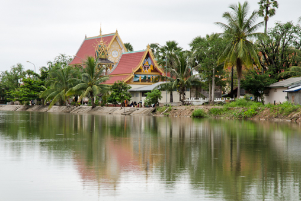

ພະທາດໂພ່ນ
ພະທາດໂພນ: ຕັ້ງຢູ່ເສັ້ນທາງດຽວກັນ ທີ່ຈະໄປຜາສາດເຮືອນຫີນ ຫ່າງຈາກສະຫະຫວັນນະເຂດ ປະມານ 65 ກິໂລແມັດ. ພະທາດໂພ່ນ ປະດິດສະຖານຢູ່ວັດເຈຕິຍາຣາມ ບ້ານໂພນທາດ ເມືອງໄຊພູທອງ ແຂວງສະຫວັນນະເຂດ.ພະທາດໂພນເປັນສະຖານທີ່ສັກສິດຂອງເມືອງໄຊພູທອງ ອົງເຈດີ ເປັນຊົງກົມສີຂາວຂະໜາດໃຫຍ່ ລັກສະນະຄ້າຍພະທາດໝາກໂມທີ່ຫລວງພະບາງ ກ່າວກັນວ່າສ້າງມາ 2000 ກວ່າປີແລ້ວ.

ສະໄໝພະເຈົ້າລ້ານຊ້າງຊຽງທອງ ສະເຫວີຍລາຊະສົມບັດ ແມ່ນສົມເດັດພະເຈົ້າພຸດທະວົງສາ ໄດ້ມີສັດທາພ້ອມໄພ່ຟ້າຂ້າແຜ່ນດິນ ໄດ້ກໍ່ສ້າງພະທາດໂພ່ນລູກນີ້ຂຶ້ນ ເພື່ອໄວ້ເປັນປູ ຊະນິຍະສະຖານອັນສຳຄັນແກ່ກຸລະບຸດຜູ້ເກີດສຸດທ້າຍພາຍຫຼັງ ແລະ ເປັນບ່ອນສັກກາລະບູຊາ ເຄົາລົບນົບໄຫວ້ຂອງຊາວພຸດທະສາສະນິກະຊົນທົ່ວໄປ ແລະ ຍັງທຳນາຍໄວ້ວ່າ ຈັກມີເມືອງເກີດຂຶ້ນໃນສະຖານທີ່ນັ້ນ ດັ່ງຕຳນານກ່າວໄວ້ວ່າ: ເມື່ອພະພຸດທະອົງສະເດັດປະລິນິບພານລ່ວງໄດ້ 8 ປີ ປາຍ 7ເດືອນ ມີພະອໍລະຫັນສາວົກທັງຫຼາຍ 500 ຮູບ ພ້ອມກັນກັບທ້າວພະຍາທັງຫຼາຍໃນຊົມພູທະວີບ ໄດ້ແບ່ງປັນກັນມາສ້າງພະທາດ ສີ່ລູກນີ້ຂຶ້ນ ມື້ໜຶ່ງວັນດຽວກັນຕາມພູມແດນຂອງໃຜລາວ ທາດສີ່ລູກນັ້ນຄື: 1. ພະທາດພະນົມ ບໍຣົມເຈດີ 2. ພະທາດອີງຮັງ 3. ພະທາດໂພ່ນ 4. ພະທາດເຊີງຊຸນ ( ຢູ່ໃກ້ໜອງຫານປະເທດໄທ ); ສ່ວນພະທາດ ໂພ່ນລູກນີ້ ໄດ້ມີລູກທາດອ້ອມຢູ່ຖ້ານລຸ່ມ 7 ລູກ ປະເສີດຍິ່ງໜັກ ໄດ້ສ້າງເມື່ອເດືອນ 12 ວັນພຸດ ພ.ສ 236 ໂດຍມີສົມເດັດພະພຸດທະວົງສາເປັນລາຊະອຸປະຖຳສືບຕໍ່ມາ ເພິ່ນຈະຈັດງານບຸຸນສະເຫຼີມສະຫຼອງພະທາດໃນມີ້ຂນ 15 ຄໍ່າ ເດືອນສາມ ( ເດືອນສາມເພັງ ) ຂອງທຸກໆປີ ພ້ອມກັບງານບຸຸນສະເຫຼີມສະຫຼອງພະທາດສີໂຄດຕະບອງ, ຜາສາດຫີນວັດພູ,ເຮືອນຫີນ, ພະທາດພະນົມ ໆລໆ. ພ້ອມນັ້ນຍັງມີການຈັດງານຕະຫຼາດນັດ ແລະ ການປະກວດນາງສາວໝາກໂມຫວານອີກດ້ວຍ.

ຈາກທາງເລກທີ 13 ເຂົ້າໄປຫາບ້ານທາດຕາມທາງຮາບພຽງທີ່ລາດຢາງໃໝ່ໆ ປະມານ 12-13 ກິໂລແມັດ ໃຊ້ເວລາບໍ່ດົນປະມານ 20-30 ນາທີກໍ່ຮອດວັດບ້ານທາດ ສະຖານທີ່ປະດິດສະຖານພຣະທາດໂພ່ນ. ສິ່ງແຮກທີ່ປະທັບໃຈເມື່ອເຫັນເມື່ອຮອດບ້ານ ນອກ ຈາກຖະໜົນຫົນທາງທີ່ສວຍງາມ ມີໄຟຟ້າເຍືອງທາງທີ່ບົ່ງບອກເຖິງຄວາມຈະເລີນຂອງບ້ານນີ້ແລ້ວ ຍັງເຫັນວັດທີ່ກວ້າງຂວາງ ສວຍງາມ, ມີສະຖານທີ່ບຳເພັນທຳກິດທາງສາດສະໜາຄົບຊຸດ ສົມເປັນທີ່ໜ້ານັບຖືສັກກາ ລະບູຊາອີຫຼີ..